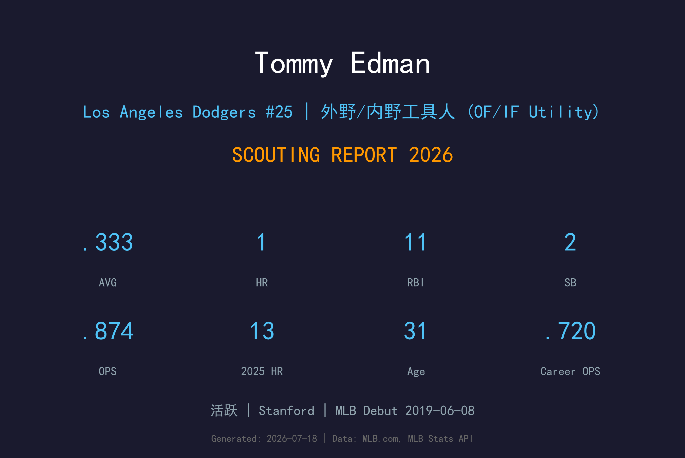
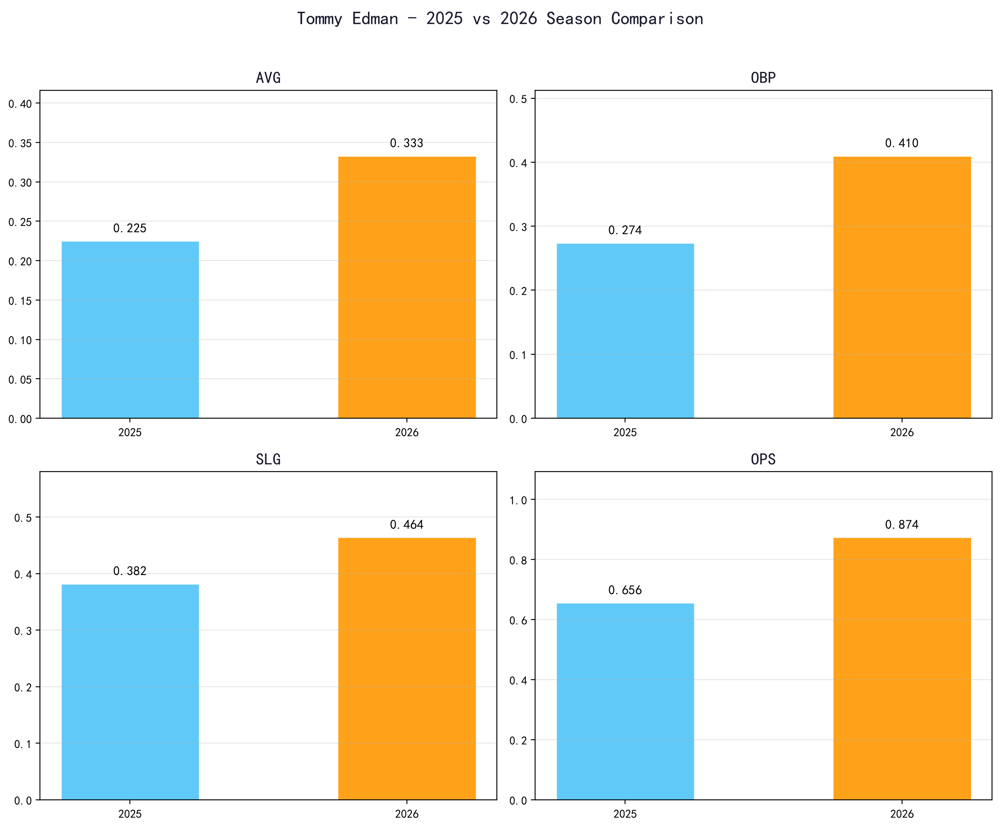
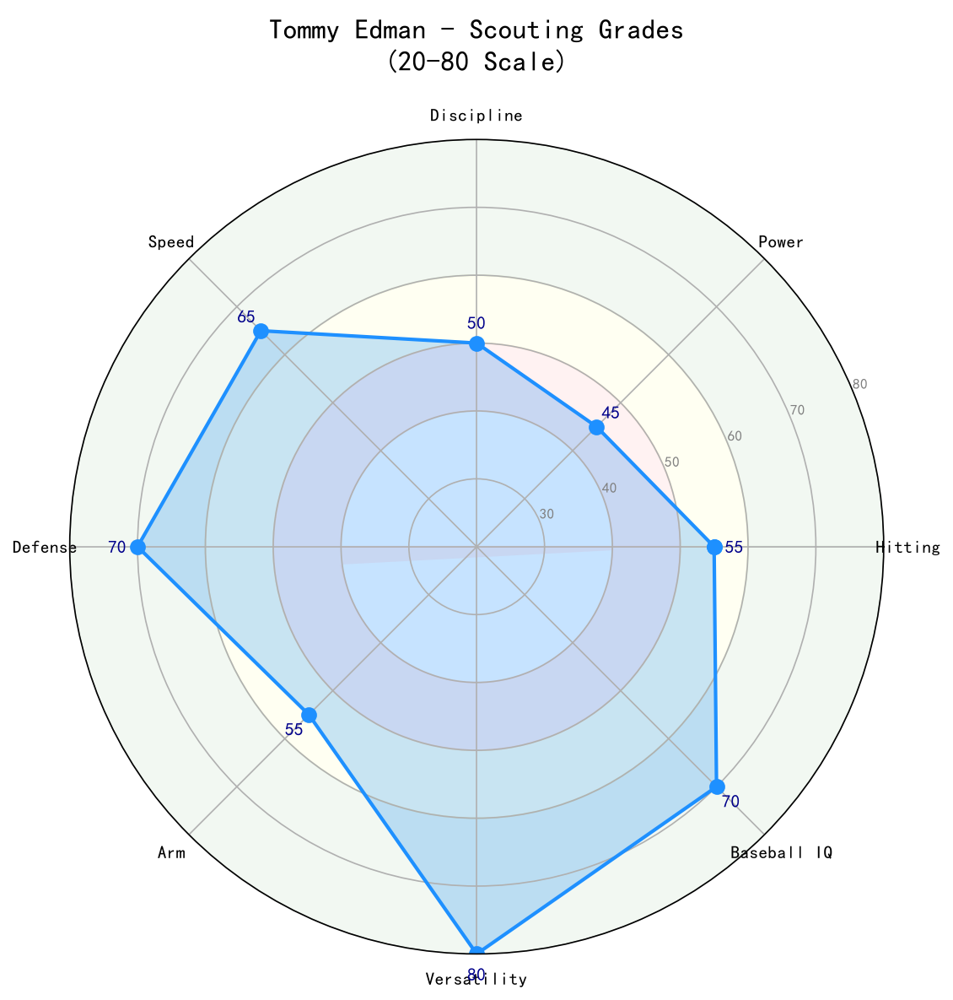

Los Angeles Dodgers #25 | 外野/内野工具人 (OF/IF Utility) | 活跃

Tommy Edman 是道奇阵容中最宝贵的多面手工具人，能够出任二垒、游击、三垒、中外野和右外野。他以左右开弓的打击、出色的跑垒、 elite 防守和冠军级心理素质著称，是2024年国联冠军赛MVP。
2025年他虽然在常规赛打击表现下滑（.225/.274/.382），但仍贡献13支全垒打和49分打点，并在季后赛中多次建功，包括世界大赛第3战的关键防守。2026年因伤病导致样本较小，但目前在打击率上强势反弹至 .333/.410/.464。
Edman 的价值无法用传统数据完全衡量。他的防守弹性、跑垒智慧和关键时刻的稳定发挥，使他成为道奇冠军阵容中不可或缺的 glue guy。
在 Stanford 大学三年入选 Pac-12 防守阵容和学术第一队。大三时领跑球队得分、安打、三垒打和盗垒。2016年选秀第6轮（总第196顺位）被圣路易红雀选中。
2019年6月8日登上大联盟。首个完整赛季2020年因疫情缩短，但2021年已站稳脚跟，成为红雀主力工具人。曾多次在国联新人王和MVP投票中得票。
7月29日经三方交易从红雀来到道奇。因手腕手术和脚踝问题缺席上半年，但9月复出后状态火热。国联冠军赛 slash .407/.393/.630，11支安打、11分打点，追平道奇单一季后赛系列赛队史纪录，获选NLCS MVP。
开季9场5轰，前30场8轰24打点。季中两次进入IL。世界大赛第3战18局大战中，完成一次不可思议的飞扑接球，从 Freddie Freeman 手套弹出的球中救出局面，并精准传三垒封杀跑者，成为冠军战的关键瞬间。
23场比赛、.333/.410/.464，显示健康状态下的打击能力。虽然目前仍在找回比赛节奏和完整出赛时间，但已经证明自己仍是高端多面手。

📈 上图为近三年核心数据趋势。柱状图高度代表该年度表现，便于快速比较球员状态的上升或下滑。
| 赛季 | G | AVG | OBP | SLG | OPS | HR | RBI | BB | SO |
|---|---|---|---|---|---|---|---|---|---|
| 2025 | 97 | .225 | .274 | .382 | .656 | 13 | 49 | 19 | 61 |
| 2026 | 23 | .333 | .410 | .464 | .874 | 1 | 11 | 8 | 16 |
Edman 的防守弹性是他的核心价值。他能在二垒、三垒、游击和中外野之间无缝切换， glove work 和 range 都达到联盟优秀水准。他的 arm 适合内野和中外野，但不像一些外野重炮手那样强劲。他是道奇教练团在调配阵容时最重要的棋子。
Edman 是 switch-hitter，以 contact 和 平飞球 为主，不善于长打。2025年 OPS 仅 .656，主要因为选球耐心下降（BB/SO 比从生涯水准滑落）和 BABIP 偏低。但他仍能在开季打出火热状态，说明状态并非完全衰退。脚踝和手腕伤病可能影响了他的挥棒力量和节奏。
2026年小样本下 .333/.410/.464，上垒率和选球明显回升。虽然长打能力尚未完全恢复，但他的接触和跑垒能力仍在。若健康稳定，他有望成为道奇阵中的 table setter 和防守救火员。
Edman 生涯已经跑出117次盗垒，成功率优秀。他的速度让他能执行 hit-and-run、双盗垒和 scoring from first on doubles。在道奇强调 IQ 和 situational hitting 的打线中，他非常适合前几棒或第9棒角色。

防守弹性、跑垒和季后赛表现是 Edman 的核心价值。只要保持健康，他是道奇夺冠阵容不可或缺的 glue player。
A- 级 / 冠军级多面手
Tommy Edman 的生涯正处于黄金后期，但他的价值不完全依赖身体素质。他的防守IQ和跑垒智慧会随着年龄增长而保持。在道奇，他将继续作为超级工具人，填补任何需要的防守位置，并在季后赛中提供经验。
2026（下半季）：若健康，打击率有望回到 .260-.270，OPS 接近 .730，出赛100-120场。
2027-2028：继续作为道奇主力工具人，年出赛120-130场，提供稳定防守和跑垒。
2029+：可能逐渐转为更专职的内野/外野替补角色，但经验和防守仍具价值。
Thomas Hyunsu Edman 出生于美国密歇根州庞蒂亚克（Pontiac），父亲是 Williams College 的游击手、现任 La Jolla Country Day School 棒球队总教练 John Edman，母亲 Maureen 出生于韩国，小时候移居美国。Edman 具有韩国血统，这也让他成为亚洲球迷关注的焦点。
他在圣地亚哥的 La Jolla Country Day School 高中毕业后，进入 Stanford 大学打了三年棒球。大三时入选 All-Pac-12 第一队、防守阵容和学术第一队，并在球队中领跑得分、安打、三垒打和盗垒。他也是近40年来 Stanford 棒球队 GPA 最高的球员之一。
2016年，红雀在第6轮选中 Edman。他在2019年登上大联盟，迅速以 multi-position 能力和 energetic 球风赢得球迷喜爱。2024年他被交易至道奇，并在季后赛中大放异彩，成为国联冠军赛MVP。他与妻子 Kristen 育有一子一女，家庭观念浓厚，也是道奇更衣室中深受欢迎的队友。